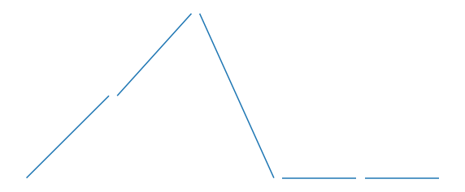
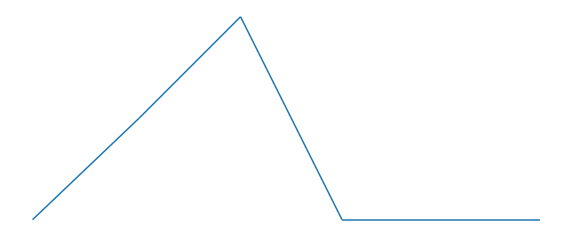
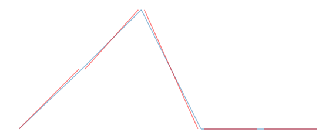
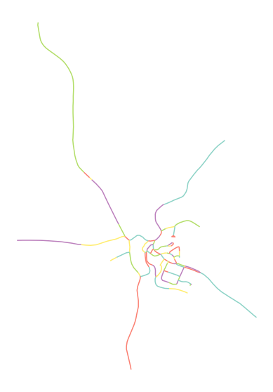
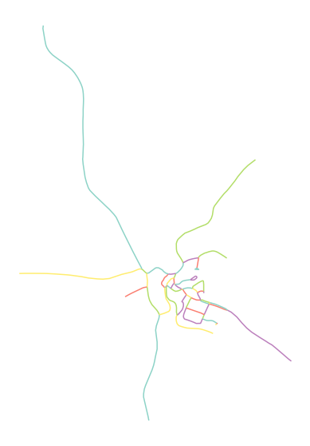
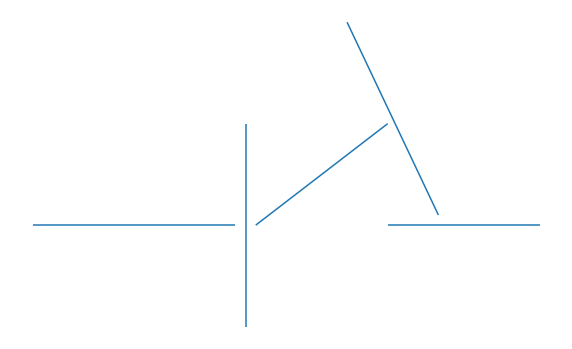
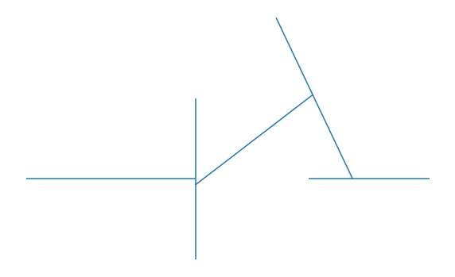
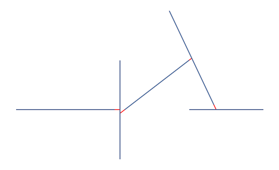

Note
Simple network data preprocessing#
This guide introduces a selection of tools to preprocess the street network and eliminate unwanted gaps in the network and fix its topology.
[1]:
import momepy
import geopandas as gpd
from shapely.geometry import LineString
Close gaps#
The first issue which may happen is the network which is disconnected. The endpoints do not match. Such a network would result in incorrect results of any graph-based analysis. momepy.close_gaps can fix the issue by snapping nearby endpoints to a midpoint between the two.
[2]:
l1 = LineString([(1, 0), (2, 1)])
l2 = LineString([(2.1, 1), (3, 2)])
l3 = LineString([(3.1, 2), (4, 0)])
l4 = LineString([(4.1, 0), (5, 0)])
l5 = LineString([(5.1, 0), (6, 0)])
[3]:
df = gpd.GeoDataFrame(['a', 'b', 'c', 'd', 'e'], geometry=[l1, l2, l3, l4, l5])
df.plot(figsize=(10, 10)).set_axis_off()

All LineStrings above need to be fixed.
[4]:
df.geometry = momepy.close_gaps(df, .25)
[5]:
df.plot(figsize=(10, 10)).set_axis_off()

Now we can compare how the fixed network looks compared to the original one.
[6]:
ax = df.plot(alpha=.5, figsize=(10, 10))
gpd.GeoDataFrame(geometry=[l1, l2, l3, l4, l5]).plot(ax=ax, color='r', alpha=.5)
ax.set_axis_off()

Remove false nodes#
A very common issue is incorrect topology. LineString should end either at road intersections or in dead-ends. However, we often see geometry split randomly along the way. momepy.remove_false_nodes can fix that.
We will use mapclassify.greedy to highlight each segment.
[7]:
from mapclassify import greedy
[8]:
df = gpd.read_file(momepy.datasets.get_path('tests'), layer='broken_network')
[9]:
df.plot(greedy(df), categorical=True, figsize=(10, 10), cmap="Set3").set_axis_off()

You can see that the topology of the network above is not as it should be.
For a reference, let’s check how many geometries we have now:
[10]:
len(df)
[10]:
83
Okay, 83 is a starting value. Now let’s remove false nodes.
[11]:
fixed = momepy.remove_false_nodes(df)
[12]:
fixed.plot(greedy(fixed), categorical=True, figsize=(10, 10), cmap="Set3").set_axis_off()

From the figure above, it is clear that the network is now topologically correct. How many features are there now?
[13]:
len(fixed)
[13]:
56
We have been able to represent the same network using 27 features less.
Extend lines#
In some cases, like in generation of enclosures, we may want to close some gaps by extending existing LineStrings until they meet other geometry.
[14]:
l1 = LineString([(0, 0), (2, 0)])
l2 = LineString([(2.1, -1), (2.1, 1)])
l3 = LineString([(3.1, 2), (4, 0.1)])
l4 = LineString([(3.5, 0), (5, 0)])
l5 = LineString([(2.2, 0), (3.5, 1)])
[15]:
df = gpd.GeoDataFrame(['a', 'b', 'c', 'd', 'e'], geometry=[l1, l2, l3, l4, l5])
df.plot(figsize=(10, 10)).set_axis_off()

The situation above is typical. The network is almost connected, but there are gaps. Let’s extend geometries and close them. Note that we cannot use momepy.close_gaps in this situation as we are not snapping endpoints to endpoints.
[16]:
extended = momepy.extend_lines(df, tolerance=.2)
[17]:
extended.plot(figsize=(10, 10)).set_axis_off()

[18]:
ax = extended.plot(figsize=(10, 10), color='r')
df.plot(ax=ax)
ax.set_axis_off()

The figures above are self-explanatory. However, remember that the extended network is not topologically correct and is not suitable for network analysis directly. For enclosures it is perfect though.
For more details and further options, see the API documentation.